| participant_ID | mean.acc | mean.self | study | AGE | SHIPLEY | HLVA | FACTOR3 | QRITOTAL | GENDER | EDUCATION | ETHNICITY |
|---|---|---|---|---|---|---|---|---|---|---|---|
| studytwo.1 | 0.4107143 | 6.071429 | studytwo | 26 | 27 | 6 | 50 | 9 | Female | Higher | Asian |
| studytwo.10 | 0.6071429 | 8.500000 | studytwo | 38 | 24 | 9 | 58 | 15 | Female | Secondary | White |
| studytwo.100 | 0.8750000 | 8.928571 | studytwo | 66 | 40 | 13 | 60 | 20 | Female | Higher | White |
| studytwo.101 | 0.9642857 | 8.500000 | studytwo | 21 | 31 | 11 | 59 | 14 | Female | Higher | White |
| studytwo.102 | 0.7142857 | 7.071429 | studytwo | 74 | 35 | 7 | 52 | 18 | Male | Higher | White |
| studytwo.103 | 0.7678571 | 5.071429 | studytwo | 18 | 40 | 11 | 54 | 15 | Female | Further | White |
Week 8. Introduction to the linear model
Written by Rob Davies
8.1 Overview
Welcome to your overview of the work we will do together in Week 8.
This week, we focus on learning how to predict people: predicting observations about us (e.g., our attributes) or about the things we make or do. To do this, we will learn to think about and work with linear models.
Looking ahead to your professional lives, learning about linear models will equip you to do behavioural analysis in a wide range of contexts, from clinical research to business intelligence.
As students, now, learning about linear model analyses in the context of the Clearly understood project will help you to understand how to critically evaluate research when you read about it (or write about it) in research reports.
You will see that the linear model is very flexible and powerful so learning to use it effectively involves not only learning to code analyses but also learning to think critically about what it is you want to do with it.
8.2 Our learning goals
We continue to develop your critical thinking while we strengthen your practical skills.
1. Critical thinking
- Concepts: how we go from ideas and questions to hypotheses.
As psychologists, we often want to ask questions like these:
- Does variation in one measure (X) predict variation in another variable (Y)?
- What are the factors that influence outcome Y?
- Is a theoretical model consistent with observed behaviour?
2. Practical skills
To enable you to answer questions like these, you will learn how to:
- Skills – code linear models;
- Skills – identify and interpret model statistics;
- Concepts and skills – critically evaluate the results;
- Concepts and skills – communicate the results.
As we progress, we will continue to strengthen your skills in building professional visualizations.
8.3 Learning resources
You will see, next, the lectures we share to explain the concepts behind the critical thinking and analysis skills you will develop, then you will see information about the practical materials you can use to practise your skills.
Every week, you will learn best if you first watch the lectures then do the practical exercises.
Linked resources
- In the chapter for week 7, we share materials to support your development of critical thinking about associations, and your development of practical skills in working with correlation-based analyses.
8.3.1 Lectures
The lecture materials for this week are presented in four short parts.
Click on a link and your browser should open a tab showing the Panopto video for the lecture part.
- Part 1 (12 minutes) Focus on the linear model: The concepts and skills we will learn about in week 8: our aims, the kind of questions we can answer with linear models, and how we get from those questions to sensible linear model analyses.
- Part 2 (15 minutes): the first key concept — how we use linear models to predict average outcomes.
- Part 3 (12 minutes): the second key concept — how we ensure that linear models make the best predictions given the data we have.
- Part 4 (14 minutes): the key skills — coding linear models, reading model results, and writing reports of those results.
8.3.2 Lecture slides
Download the lecture slides
The slides presented in the videos can be downloaded here:
- The slides exactly as presented (12 MB).
You can download the web page .html file and click on it to open it in any browser (e.g., Chrome, Edge or Safari). The slide images are high quality so the file is quite big and may take a few seconds to download.
We are going to work through some practical exercises, next, to develop your critical thinking and practical skills for working with linear models.
8.4 Practical materials: data and R-Studio
We will work with two data files which you can download by clicking on their names (below):
Once you have downloaded the files, you will need to upload them to the R-Studio server to access and use the R files.
Important
Here is a link to the sign-in page for R-Studio Server
8.4.1 Practical materials guide
You will find that the practical exercises are simpler to do if you follow these steps in order.
- The data — We will take a quick look at what is inside the data files so you know what everything means.
- The
how-toguide — We will go through the practical analysis and visualization coding steps, showing all the code required for each step. - The
practicalexercises — We will set out the tasks, questions and challenges that you should complete to learn the practical skills we target this week.
This week — Week 8 — we consolidate what you have been learning, so your critical thinking and practical skills have a firm foundation then we extend your skills by learning how to do new things.
Week 8 parts
- Set-up
- Load the data
- Revision: developing histograms to examine the distributions of variables.
- Revision: developing scatterplots to examine associations between variables.
- Revision: using correlations to to answer research questions, making sure you are comfortable.
- New: using a linear model to answer research questions.
- New: using a linear model to make predictions.
We learn these skills so that we can answer research questions like:
- What person attributes predict success in understanding?
- Can people accurately evaluate whether they correctly understand written health information?
These kinds of research questions can often be answered through analyses using linear models. We typically use linear models to estimate the association between predictors and outcomes.
When we do these analyses, we need to think about how we report the results:
- We usually need to report information about the kind of model we specify;
- We will need to report the nature of the association estimated in our model;
- We usually need to decide if (i.) the association is significant? (ii.) does the association reflect a positive or negative relationship between outcome and predictor? (iii.) is the association we see in our sample data relatively strong or weak?
We will consolidate and extend learning on data visualization so that we can produce eye-catching, appealing, plots for professional audiences.
8.4.1.1 The data files
Each of the data files we will work with has a similar structure.
Here are what the first few rows in the data file study.two.gen looks like:
Tip
The webpage has a slider under the data table window, so you can scroll across the columns: move your cursor over the window to show the slider.
When you look at the data table, you can see the columns:
participant_IDparticipant codemean.accaverage accuracy of response to questions testing understanding of health guidancemean.selfaverage self-rated accuracy of understanding of health guidancestudyvariable coding for what study the data were collected inAGEage in yearsHLVAhealth literacy test scoreSHIPLEYvocabulary knowledge test scoreFACTOR3reading strategy survey scoreGENDERgender codeEDUCATIONeducation level codeETHNICITYethnicity (Office National Statistics categories) code
8.4.2 The how-to guide
We will take things step-by-step.
Make sure you complete each part, task and question, in order, before you move on to the next one.
8.4.2.1 How-to Part 1: Set-up
To begin, we set up our environment in R.
How-to Task 1 – Run code to empty the R environment
Tip
rm(list=ls()) How-to Task 2 – Run code to load libraries
Load libraries using library().
Tip
library("patchwork")
library("tidyverse")8.4.2.2 How-to Part 2: Load the data
How-to Task 3 – Read in the data file we will be using
The code in the how-to guide was written to work with the data file:
study-one-general-participants.csv.
Read in the data file – using read_csv().
Tip
study.one.gen <- read_csv("study-one-general-participants.csv")
Tip
Last week, we started working with the online help information on R functions.
Let’s build on that.
You can read the technical information about the read_csv() function here:
https://readr.tidyverse.org/reference/read_delim.html
- Take a look around the
{tidyverse}webpages: expert professionals use information like this whenever they try to figure out how to do something.
How-to Task 4 – Inspect the data file
Use the summary() function to take a look.
Tip
summary(study.one.gen) participant_ID mean.acc mean.self study
Length:169 Min. :0.3600 Min. :3.440 Length:169
Class :character 1st Qu.:0.7600 1st Qu.:6.080 Class :character
Mode :character Median :0.8400 Median :7.080 Mode :character
Mean :0.8163 Mean :6.906
3rd Qu.:0.9000 3rd Qu.:7.920
Max. :0.9900 Max. :9.000
AGE SHIPLEY HLVA FACTOR3
Min. :18.00 Min. :23.00 Min. : 3.000 Min. :34.00
1st Qu.:24.00 1st Qu.:33.00 1st Qu.: 7.000 1st Qu.:46.00
Median :32.00 Median :35.00 Median : 9.000 Median :51.00
Mean :34.87 Mean :34.96 Mean : 8.905 Mean :50.33
3rd Qu.:42.00 3rd Qu.:38.00 3rd Qu.:10.000 3rd Qu.:55.00
Max. :76.00 Max. :40.00 Max. :14.000 Max. :63.00
QRITOTAL GENDER EDUCATION ETHNICITY
Min. : 6.00 Length:169 Length:169 Length:169
1st Qu.:12.00 Class :character Class :character Class :character
Median :13.00 Mode :character Mode :character Mode :character
Mean :13.36
3rd Qu.:15.00
Max. :19.00
Tip
summary()will give you either descriptive statistics for variable columns classified as numeric or will tell you that columns in the dataset are not numeric.
8.4.2.3 How-to Part 3: Developing histograms to examine the distributions of variables
How-to Task 5 – Edit histogram plotting code to visualize distributions like a pro
You have seen how to produce histograms before, in a previous class (week 3): here we are consolidating skills by practising them in different contexts, using different data.
We extend your skills by adding some new moves.
When we learn about creating a plot, it helps us to identify what each code element is doing. Here’s an example: run the line of code and see the result in the Plots window in R-Studio:
ggplot(data = study.one.gen, aes(x = mean.acc)) + geom_histogram()`stat_bin()` using `bins = 30`. Pick better value with `binwidth`.These are the plotting code elements and what they are doing:
ggplot(...)you tell R you want to make a plot using theggplot()function;ggplot(data = study.one.gen ...)you tell R you want to make a plot with thestudy.one.gendata;ggplot(..., aes(x = mean.acc))you tell R that you want to make a plot with the variablemean.acc;- here, you specify the aesthetic mapping,
x = mean.acc; ggplot(...) + geom_histogram()you tell R you want to show the distribution of values ofmean.accas a geometric object: a histogram.
You have seen the plotting code arranged in two different ways, in one line, as above, or in a series of steps, like this:
ggplot(data = study.one.gen, aes(x = mean.acc)) +
geom_histogram()`stat_bin()` using `bins = 30`. Pick better value with `binwidth`.
Tip
Notice that it has no impact whether you write the plotting code in one line, or in a series of lines.
R cares very much about how you spell function or variable names.
R does not usually care about line breaks.
Learning what does or does not matter is a key lesson, when you learn a language, whatever the language.
If we break the plotting code into steps, it makes the code easier for you to read, and it will make it easier to add edits, one at a time. Let’s see how that works, next.
To help you learn, we are going to work on editing the code to do things, and we are going to explain why we want to be able to do these things.
These are the things we want to do:
- new – the appearance of the bars using
binwidth; - revision – the colour of the background using
theme_bw(); - revision – the appearance of the labels using
labs(); - new – setting the x-axis limits to reflect the full range of possible scores on the x-axis variable using
xlim(); - new – adding annotation – here, a vertical line using
geom_vline()– to focus the attention of the audience for a plot on specific information about the variable distribution (here, the sample average for the variable).
Tip
- Click on each
Codetab to see how the code changes, and to see how the plot changes as a result. - Click on each
Whytab for an explanation of why we want to do this.
You may need to hover your cursor over the space to the right of the Code tab to see the Why tab.
- new – the appearance of the bars using
binwidth
ggplot(data = study.one.gen, aes(x = SHIPLEY)) +
geom_histogram(binwidth = 2)Histogram binwidth has to be a number. The best way to learn what the number tells R to do is to experiment with different values.
- Notice that in the code we set the
binwidthto 2. - If you are producing a histogram,
binwidthhas to be a number larger than the potential minimum and smaller than the potential maximum for the variable you are plotting: so for theSHIPLEYvocabulary test, because the test scores can only range between 0-40, thebinwidthnumber you use in your plotting code has to be bigger than 0 but smaller than 40.
In general, the larger (wider) the binwidth, the less detail you see about the distribution of values in the variable.
- In a histogram, each bar you draw represents a collection of values. The
binwidthtells R how many values to collect together, for each bar. So, the bigger the width, the bigger (wider and taller) the bar because it represents more observations.
Whether or not you want to present detail is then a question concerning your communication aims: do you want to give an impression, or identify a specific detail?
- revision – the colour of the background using
theme_bw()
ggplot(data = study.one.gen, aes(x = SHIPLEY)) +
geom_histogram(binwidth = 2) +
theme_bw()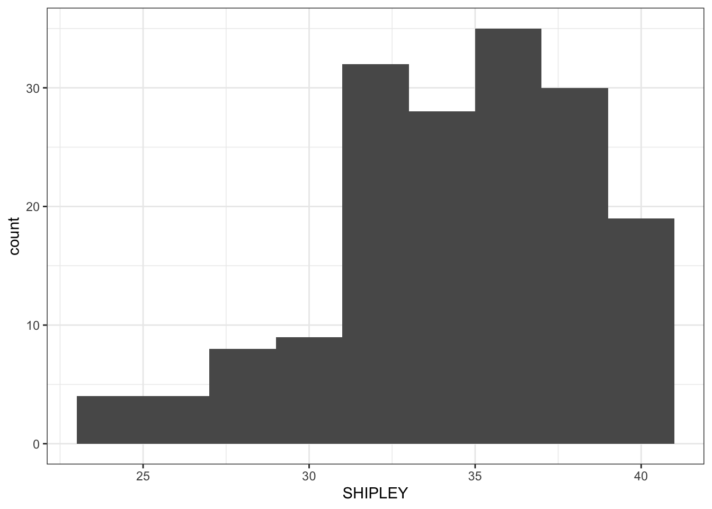
In general, a grey background is argued to be a good way to present information visually but we often use a white background because it helps the plot elements to be visible, especially, for example, if we are giving a presentation.
- revision – the appearance of the labels using
labs()
ggplot(data = study.one.gen, aes(x = SHIPLEY)) +
geom_histogram(binwidth = 2) +
theme_bw() +
labs(x = "Vocabulary (SHIPLEY)", y = "frequency count")You cannot assume that the audience for your plots will understand what you are referring to, if you just use data-set variable names e.g. SHIPLEY. They may not be familiar with your data-set. This means you need to use axis labels that will make sense to most people in your audience.
- new – setting the x-axis limits using
xlim()
ggplot(data = study.one.gen, aes(x = SHIPLEY)) +
geom_histogram(binwidth = 2) +
theme_bw() +
labs(x = "Vocabulary (SHIPLEY)", y = "frequency count") +
xlim(0,40)Warning: Removed 2 rows containing missing values or values outside the scale range
(`geom_bar()`).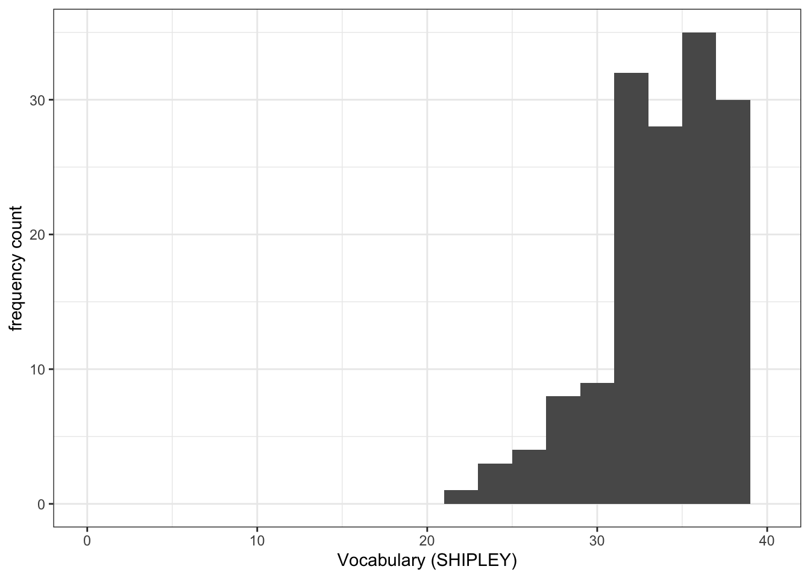
- It is often useful to set the axis limits like this: because we want to show the audience where the sample values are distributed compared to where they could be distributed, given the measure.
- This makes sense, e.g., if you want to see the relative age distribution of a sample compared to the population, or because we want to give the audience a more accurate picture of the data.
- new – adding annotation – here, a vertical line
ggplot(data = study.one.gen, aes(x = SHIPLEY)) +
geom_histogram(binwidth = 2) +
theme_bw() +
labs(x = "Vocabulary (SHIPLEY)", y = "frequency count") +
xlim(0,40) +
geom_vline(xintercept = mean(study.one.gen$SHIPLEY), colour = "red", linewidth = 1.5)Warning: Removed 2 rows containing missing values or values outside the scale range
(`geom_bar()`).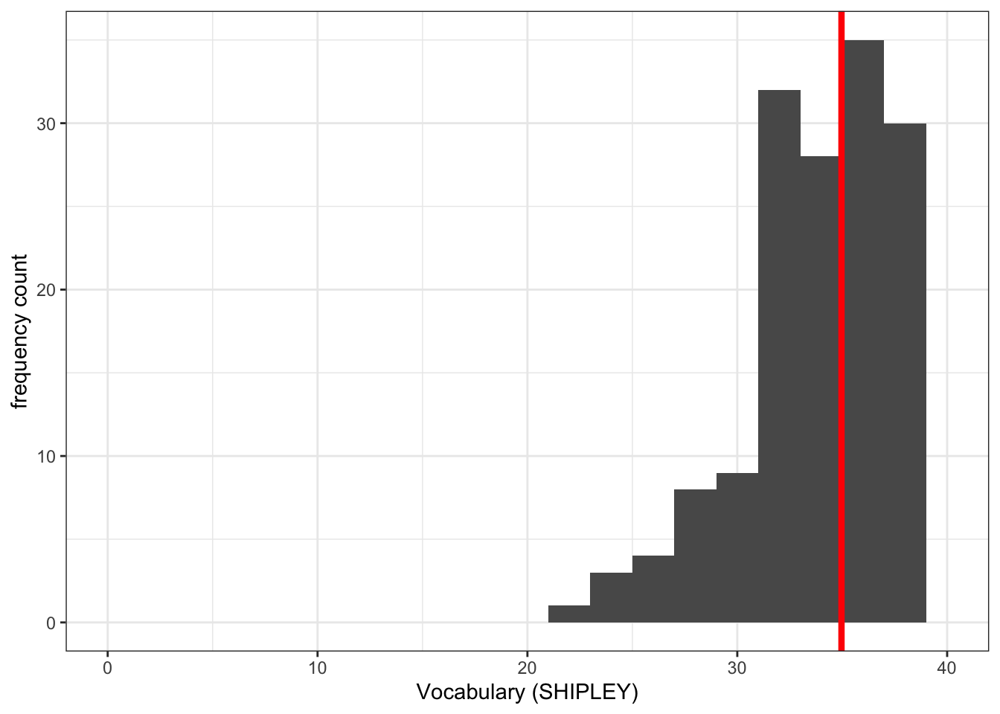
Notice that we used the geom_vline() element to plot a vertical line at the location on the x-axis we define.
We do this in the steps:
geom_vline(...)– draw a vertical line;...xintercept...– draw the line so it hits the x-axis (intercepts the x-axis);...xintercept = mean(study.one.gen$SHIPLEY...– at a location defined by the mean of the variablemean(study.one.gen$SHIPLEY);...colour = "red", size = 1.5..– make the line red and one and a half times the default thickness.
We can use annotations, like this vertical line, when we want to draw the attention of the audience for our plot to a specific feature of the data.
What are we learning here?
You can see that while the data stays the same, the appearance of the plot changes, as we add each edit to the plotting code.
The lesson that we are learning, here, is not just that you can arrange plotting code in steps but that in general in R you can build things (like plots) one action at a time.
Further information you can explore
We can define the limits on the x-axis and on the y-axis, see the {ggplot2} library reference information on setting limits is here:
https://ggplot2.tidyverse.org/reference/lims.html
The {ggplot2} reference information for drawing lines is here:
8.4.2.4 How-to Part 4: Developing scatterplots to examine associations between variables
How-to Task 6 – Edit scatterplot code to visualize associations like a pro
You have seen these code moves before, in previous classes (weeks 3 and 4): we are consolidating skills by practising your coding in different contexts, using different data.
We extend your skills by adding some new moves.
We create scatterplots to examine the association between pairs of variables. For example, we can draw a scatterplot to examine the association between variation in the values of SHIPLEY and of mean.acc.
Tip
ggplot(data = study.one.gen, aes(x = SHIPLEY, y = mean.acc)) +
geom_point()The plot code moves through the following steps:
ggplot(...)makes a plot.ggplot(data = study.one.gen, ...)uses thestudy.one.gendata-set.ggplot(...aes(x = SHIPLEY, y = mean.acc))uses two aesthetic mappings.geom_point()show the mappings as points.
We are now going to edit:
- revision and new – the appearance of the points using alpha, size, shape, and colour;
- revision – the colour of the background using
theme_bw(); - revision – the appearance of the labels using
labs(); - new – the x-axis and y-axis limits using
lim().
We make the changes, one change at a time.
Click on the drop-down view to see the code but, if you want a challenge, first try to write the code on your own, using what you have learned so far.
- revision and new – the appearance of the points using alpha, size, shape, and colour
Code
ggplot(data = study.one.gen, aes(x = SHIPLEY, y = mean.acc)) +
geom_point(alpha = 0.5, size = 2, colour = "blue", shape = 'square') 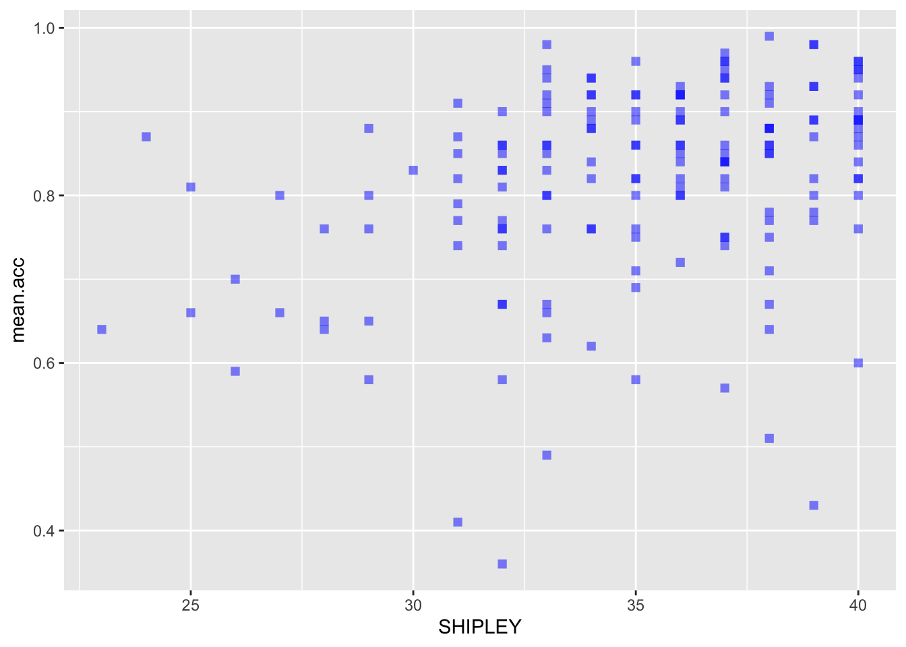
- revision – the colour of the background using
theme_bw()
Code
ggplot(data = study.one.gen, aes(x = SHIPLEY, y = mean.acc)) +
geom_point(alpha = 0.5, size = 2, colour = "blue", shape = 'square') +
theme_bw()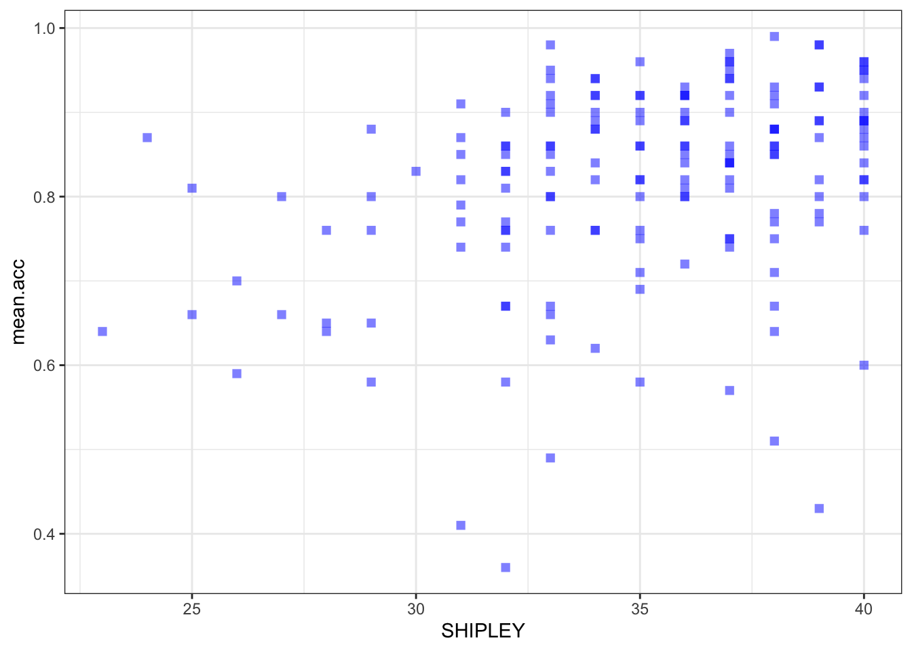
- revision – the appearance of the labels using
labs()
Code
ggplot(data = study.one.gen, aes(x = SHIPLEY, y = mean.acc)) +
geom_point(alpha = 0.5, size = 2, colour = "blue", shape = 'square') +
theme_bw() +
labs(x = "Vocabulary (SHIPLEY)", y = "mean accuracy")- new – the x-axis and y-axis limits using
lim()
Code
ggplot(data = study.one.gen, aes(x = SHIPLEY, y = mean.acc)) +
geom_point(alpha = 0.5, size = 2, colour = "blue", shape = 'square') +
theme_bw() +
labs(x = "SHIPLEY", y = "mean accuracy") +
xlim(0, 40) + ylim(0, 1)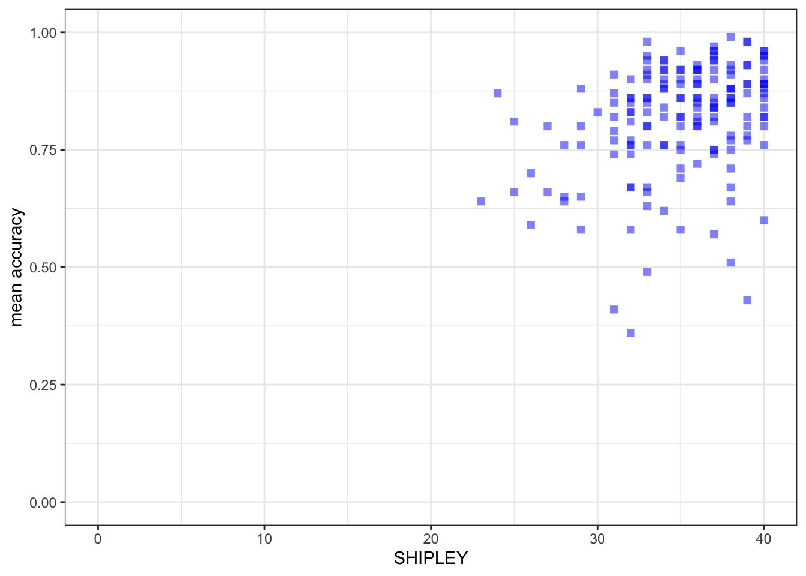
Notice that:
I set the x-axis limits to the minimum (0) and maximum (40) possible values for the
SHIPLEYvariable.I set the y-axis limits to the minimum (0) and maximum (1) possible values for the mean accuracy variable
mean.acc.
What are we learning here?
It is generally a good idea to show the minimum value (the origin) for each variable.
- Not doing this, i.e., showing a more narrow slice of the sample range is an easy way to exaggerate the strength of associations or to imply incorrectly the breadth in variation.
You can change the transparency (alpha), size, colour and shape of important parts of a plot. Here, we are changing the appearance of the points. But you can also change the transparency (alpha), size, colour and shape of reference lines added to a plot.
Further information you can explore
The {ggplot2} geom_point() reference information is here:
https://ggplot2.tidyverse.org/reference/geom_point.html
- where you can see some examples of the edits we have done.
Some useful information about shape options is here:
http://www.cookbook-r.com/Graphs/Shapes_and_line_types/
Some useful information about colour options is here:
Important
Now you: experiment!
8.4.2.5 How-to Part 5: Using correlations to to answer research questions
How-to Task 7 – Examine the correlation between a pair of variables
In the Clearly understood project, one of our research questions is:
- What person attributes predict success in understanding?
We can answer this question by doing a correlation analysis. This is because we can expect that if vocabulary knowledge predicts success in understanding then variation in vocabulary knowledge should be associated with variation in success of understanding. We measured how successful study participants were in understanding health information: recording outcome mean.acc as the accuracy of response to questions designed to examine understanding. We measured a key person attribute, vocabulary knowledge using the SHIPLEY vocabulary test. We can then examine the association between this pair of variables using correlation.
Here, we examine the correlation between the mean accuracy (mean.acc) of understanding of health information, and vocabulary (SHIPLEY) knowledge, for each person in our participant sample.
Can you figure out how to code the correlation analysis?
It helps with your learning if you first try to predict what the code will look like. Then reveal the code, below, to see what you guessed right.
Code
cor.test(study.one.gen$SHIPLEY, study.one.gen$mean.acc, method = "pearson", alternative = "two.sided")
Pearson's product-moment correlation
data: study.one.gen$SHIPLEY and study.one.gen$mean.acc
t = 4.5855, df = 167, p-value = 8.846e-06
alternative hypothesis: true correlation is not equal to 0
95 percent confidence interval:
0.1931990 0.4620413
sample estimates:
cor
0.334406 Q.1. What is r, the correlation coefficient?
Answer
A.1. r = 0.334406
Q.2. Is the correlation significant?
Answer
A.2. r is significant, p < .05
Q.3. What are the values for t and p for the significance test for the correlation?
Answer
A.3. t = 4.5855, p = 8.846e-06
Q.4. What do you conclude is the answer to the research question, given the correlation results?
Hint
Review the scatterplot you drew earlier (or draw one now) to examine the shape of the association between these variables.
Answer
A.4. Vocabulary and
mean.accare positively correlated suggesting that asSHIPLEYscores increase so also domean.accscores.
8.4.2.6 How-to Part 6: New: using a linear model to answer research questions
How-to Task 8 – Code and read the results from a linear model analysis
As we have seen, one of our research questions is:
- What person attributes predict success in understanding?
We can examine the relation between outcome mean accuracy (mean.acc) of understanding and vocabulary (SHIPLEY) knowledge by testing if person vocabulary score predicts understanding.
We do this through a linear model analysis.
We complete the analysis using the lm() function.
model <- lm(mean.acc ~ SHIPLEY, data = study.one.gen)
summary(model)
Call:
lm(formula = mean.acc ~ SHIPLEY, data = study.one.gen)
Residuals:
Min 1Q Median 3Q Max
-0.42871 -0.04921 0.02079 0.07480 0.18430
Coefficients:
Estimate Std. Error t value Pr(>|t|)
(Intercept) 0.44914 0.08053 5.577 9.67e-08 ***
SHIPLEY 0.01050 0.00229 4.585 8.85e-06 ***
---
Signif. codes: 0 '***' 0.001 '**' 0.01 '*' 0.05 '.' 0.1 ' ' 1
Residual standard error: 0.1115 on 167 degrees of freedom
Multiple R-squared: 0.1118, Adjusted R-squared: 0.1065
F-statistic: 21.03 on 1 and 167 DF, p-value: 8.846e-06Let’s work through the elements of the linear model code so we can see what everything does:
model <- lm(...)– fit the model usinglm(...), giving the model a name here, we just call it “model”....lm(mean.acc ~ SHIPLEY...)– tell R you want a model of the outcomemean.accpredicted~by the predictorSHIPLEY....data = study.one)– tell R that the variables you name in the formula are in thestudy.onedataset.summary(model)– ask R for a summary of the model you called “model”: this is how you get the results.
Tip
Notice that R has a general formula syntax: outcome ~ predictor or y ~ x
- and uses the same format across a number of different functions;
- each time, on the left of the tilde symbol
~you identify the output or outcome variable; - but on the right of the tilde
~you identify an input or predictor variable or set of predictor variables.
If you look at the model summary you can answer the following questions.
Q.5. What is the estimate for the coefficient of the effect of the predictor, SHIPLEY?
Answer
A.5. 0.01050
Q.6. Is the effect significant?
Answer
A.6. It is significant, p < .05
Q.7. What are the values for t and p for the significance test for the coefficient?
Answer
A.7. t = 4.585, p = 8.85e-06
Q.8. What do you conclude is the answer to the research question, given the linear model results?
Answer
A.8. The model slope estimate suggests that as
SHIPLEYscores increase so also domean.accscores.
8.4.2.7 How-to Part 7: New: using a linear model to generate predictions
How-to Task 9 – Fit a linear model and plot the model predictions
We can use the model we have just fitted to plot the model predictions.
- The estimates of the coefficients (given in summary results) are the information we need to generate predictions.
- What we are predicting is how values of the outcome variable change, on average, given different values in one or more predictor variables.
- We can produce predictions by working with linear model estimates of (1.) the intercept and (2.) the coefficient of the effect of each predictor variable.
- The effect of a predictor tells you how the outcome changes (how much the outcome increases or decreases), given different values of the predictor.
We are going to do this prediction in two steps:
- revision – fit a linear model to estimate the relationship between the outcome and the predictor variables.
- new – draw a scatterplot and add a line to show the model predictions, given the model estimates.
We work through these steps in turn.
Step 1. First fit a linear model and get a summary of the estimates
Code
model <- lm(mean.acc ~ SHIPLEY, data = study.one.gen)
summary(model)
Call:
lm(formula = mean.acc ~ SHIPLEY, data = study.one.gen)
Residuals:
Min 1Q Median 3Q Max
-0.42871 -0.04921 0.02079 0.07480 0.18430
Coefficients:
Estimate Std. Error t value Pr(>|t|)
(Intercept) 0.44914 0.08053 5.577 9.67e-08 ***
SHIPLEY 0.01050 0.00229 4.585 8.85e-06 ***
---
Signif. codes: 0 '***' 0.001 '**' 0.01 '*' 0.05 '.' 0.1 ' ' 1
Residual standard error: 0.1115 on 167 degrees of freedom
Multiple R-squared: 0.1118, Adjusted R-squared: 0.1065
F-statistic: 21.03 on 1 and 167 DF, p-value: 8.846e-06Q.9. What is the coefficient estimate for the intercept?
Answer
A.9. 0.44914
Q.10. What is the coefficient estimate for the slope of SHIPLEY?
Answer
A.10. 0.01050
Step 2. Second, draw a scatterplot and add a line to show the model predictions
We use the geom_abline() function to draw the line.
Code
ggplot(data = study.one.gen, aes(x = SHIPLEY, y = mean.acc)) +
geom_point(alpha = 0.5, size = 2, colour = "blue", shape = 'square') +
geom_abline(intercept = 0.44914, slope = 0.01050, colour = "red", linewidth = 1.5) +
theme_bw() +
labs(x = "SHIPLEY", y = "mean accuracy") +
xlim(0, 40) + ylim(0, 1)You can see that the only new thing we do here is to:
- add the
geom_abline(...)function; - and, inside the brackets, add information about the intercept and the slope estimates.
Note that we can get the prediction line drawn for us automatically.
Hint
ggplot(data = study.one.gen, aes(x = SHIPLEY, y = mean.acc)) +
# geom_point(alpha = 0.5, size = 2, colour = "blue", shape = 'square') +
geom_smooth(method = 'lm', colour = "purple", alpha = .2, linewidth = 2.5, se = FALSE) +
geom_abline(intercept = 0.44914, slope = 0.01050, colour = "red", linewidth = 1) +
theme_bw() +
labs(x = "SHIPLEY", y = "mean accuracy") +
xlim(0, 40) + ylim(0, 1) `geom_smooth()` using formula = 'y ~ x'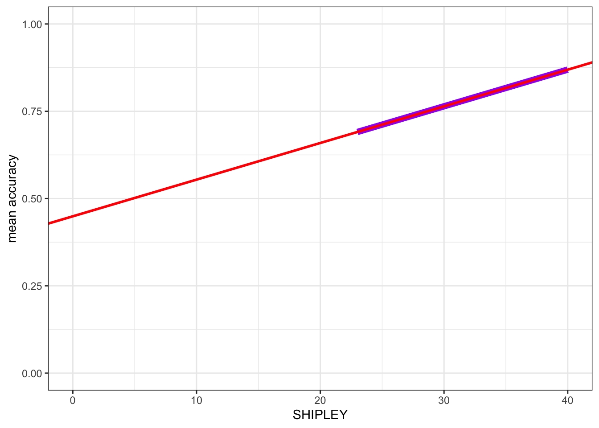
Here, I turned the points off by commenting them out, adding # to the start of the line.
- I added
geom_smooth(method = 'lm', ...)to draw a prediction line.
You can compare the red prediction line I drew using the model estimates with the purple line I used geom_smooth() to draw automatically, to see that they are identical.
You have seen geom_smooth() before: this shows you how it works.
What are we learning here?
We want to generate model predictions because doing this unlocks a key concept in understanding why we use linear models and what we do.
- Linear models are an analysis method based on the prediction of the average change in outcome variable values, given different values of one or more predictor variables.
Further information you can explore
You can get {ggplot2} reference information to see what geom_smooth() does:
https://ggplot2.tidyverse.org/reference/geom_smooth.html
You can see reference information on drawing lines here:
8.4.3 The practical exercises
Now you will progress through a series of tasks, and challenges, to test what you have learnt.
Warning
Now we will work with the data file
study-two-general-participants.csv
We again split the steps into into parts, tasks and questions.
We are going to work through the following workflow steps: each step is labelled as a practical part.
- Set-up
- Load the data
- Revision: developing histograms to examine the distributions of variables.
- Revision: developing scatterplots to examine associations between variables.
- Revision: using correlations to to answer research questions — making sure you are comfortable with the calculation and interpretation of correlation analyses.
- New: using a linear model to answer research questions.
- New: using a linear model to make predictions.
Tip
- The
how-toguide showed you what functions you needed and how you should write the function code. - Use the code structure you have seen and change it to use the data required for these
practical exercises: you will need to change the data-set name, the variable names, to get the code to work for the following exercises. - Identify what code elements must change, and what code elements have to stay the same.
In the following, we will guide you through the tasks and questions step by step.
Important
An answers version of the workbook will be provided after the practical class.
8.4.3.1 Practical Part 1: Set-up
To begin, we set up our environment in R.
Practical Task 1 – Run code to empty the R environment
Code
rm(list=ls())Practical Task 2 – Run code to load relevant libraries
Code
library("tidyverse")8.4.3.2 Practical Part 2: Load the data
Practical Task 3 – Read in the data file we will be using
The data file for the practical exercises is:
study-two-general-participants.csv
Use the read_csv() function to read the data file into R.
Code
study.two.gen <- read_csv("study-two-general-participants.csv")Rows: 172 Columns: 12
── Column specification ────────────────────────────────────────────────────────
Delimiter: ","
chr (5): participant_ID, study, GENDER, EDUCATION, ETHNICITY
dbl (7): mean.acc, mean.self, AGE, SHIPLEY, HLVA, FACTOR3, QRITOTAL
ℹ Use `spec()` to retrieve the full column specification for this data.
ℹ Specify the column types or set `show_col_types = FALSE` to quiet this message.When you code this, you can choose your own file name, but be sure to give the data object you create a distinct name e.g. study.two.gen.
Practical Task 4 – Inspect the data file
Use the summary() function to take a look.
Code
summary(study.two.gen) participant_ID mean.acc mean.self study
Length:172 Min. :0.4107 Min. :3.786 Length:172
Class :character 1st Qu.:0.6786 1st Qu.:6.411 Class :character
Mode :character Median :0.7679 Median :7.321 Mode :character
Mean :0.7596 Mean :7.101
3rd Qu.:0.8393 3rd Qu.:7.946
Max. :0.9821 Max. :9.000
AGE SHIPLEY HLVA FACTOR3
Min. :18.00 Min. :23.00 Min. : 3.000 Min. :29.00
1st Qu.:25.00 1st Qu.:32.75 1st Qu.: 7.750 1st Qu.:47.00
Median :32.50 Median :36.00 Median : 9.000 Median :51.00
Mean :35.37 Mean :35.13 Mean : 9.064 Mean :51.24
3rd Qu.:44.00 3rd Qu.:39.00 3rd Qu.:11.000 3rd Qu.:56.25
Max. :76.00 Max. :40.00 Max. :14.000 Max. :63.00
QRITOTAL GENDER EDUCATION ETHNICITY
Min. : 6.00 Length:172 Length:172 Length:172
1st Qu.:12.00 Class :character Class :character Class :character
Median :14.00 Mode :character Mode :character Mode :character
Mean :13.88
3rd Qu.:16.00
Max. :20.00 This time:
- Pay attention to what you see, for the numeric variables, in the information about minimum
Min.and maximumMax.values.
8.4.3.3 Practical Part 3: Revision – developing histograms to examine the distributions of variables
Practical Task 5 – Practise editing the appearance of a histogram plot step-by-step
Start by constructing a basic histogram.
- Draw a histogram plot to visualize the distribution of any numeric variable from the
study.two.gendata-set.
Hint
- Use the line-by-line format to break the plot code into steps.
- It will make it easier to read, and it will make it easier to add edit.
- Pick a numeric variable in the dataset.
- Run the code to produce a histogram to show the distribution of values for that variable in the data.
Can you work out how to do it without looking at the code example?
Click on the button to see the code example: compare it to the code you wrote.
Code
ggplot(data = study.two.gen, aes(x = SHIPLEY)) +
geom_histogram()`stat_bin()` using `bins = 30`. Pick better value with `binwidth`.Next, we are going to edit:
- new – the appearance of the bars using
binwidth; - revision – the appearance of the background;
- revision – the appearance of the labels using
labs(); - new – setting the x-axis limits to reflect the full range of possible scores on the x-axis variable using
xlim(); - new – adding annotation – here, a vertical line using
geom_vline().
Pract.Q.1. Can you edit the appearance of the bars by specifying a
binwidthvalue?
Hint
Remember:
- The
binwidthnumber has to be a value between the smallest possible value and the largest possible value for the variable. For example, if the variable isAGEthen the smallest possible value will be 0. Sobinwidthhas to be some number bigger than 0. - You can experiment with different numbers to find a balance between a histogram that shows detail (more, narrow, bars) and a histogram that shows an impression (fewer, wider, bars).
Code
ggplot(data = study.two.gen, aes(x = SHIPLEY)) +
geom_histogram(binwidth = 2)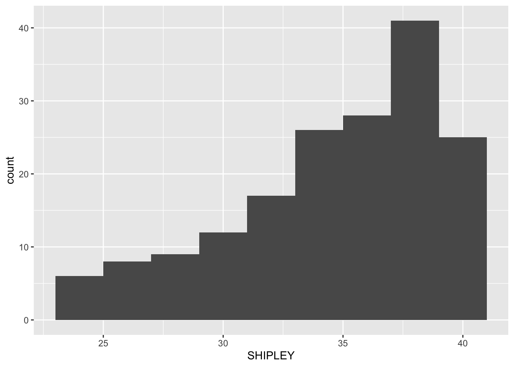
Pract.Q.2. Can you edit the appearance of the background?
Hint
There are a range of themes that you can use. Why not pick one of the options shown here:
Code
ggplot(data = study.two.gen, aes(x = SHIPLEY)) +
geom_histogram(binwidth = 2) +
theme_bw()Pract.Q.3. Can you edit the appearance of the labels?
Code
ggplot(data = study.two.gen, aes(x = SHIPLEY)) +
geom_histogram(binwidth = 2) +
theme_bw() +
labs(x = "SHIPLEY", y = "frequency count")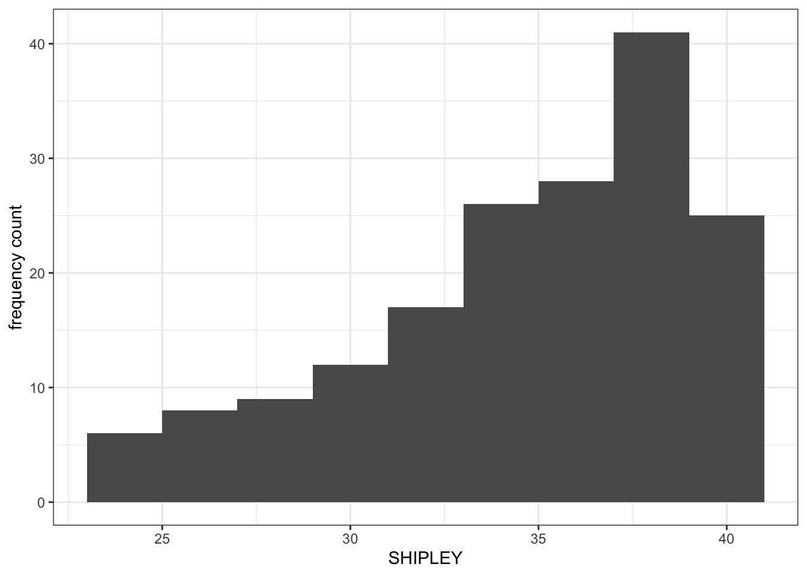
Pract.Q.4. Can you edit the x-axis limits?
Hint
What you want to do, here, is to show the smallest possible value (often, not always 0) for values in the variable.
- The idea is that you want to see the distribution of values in the sample (the histogram), for the variable, in the context of the full possible range of values for that variable.
- You can use the
summary()information to make your choice of limits.
Drawing a histogram like this allows you to show the reader how the sample compares to the wider population.
Code
ggplot(data = study.two.gen, aes(x = SHIPLEY)) +
geom_histogram(binwidth = 2) +
theme_bw() +
labs(x = "Vocabulary (SHIPLEY)", y = "frequency count") +
xlim(0,40)Warning: Removed 2 rows containing missing values or values outside the scale range
(`geom_bar()`).Pract.Q.5. Can you add annotation: a vertical line to show the mean value of the variable you are plotting?
Code
ggplot(data = study.two.gen, aes(x = SHIPLEY)) +
geom_histogram(binwidth = 2) +
theme_bw() +
labs(x = "Vocabulary (SHIPLEY)", y = "frequency count") +
xlim(0,40) +
geom_vline(xintercept = mean(study.two.gen$SHIPLEY), colour = "red", size = 1.5)Warning: Using `size` aesthetic for lines was deprecated in ggplot2 3.4.0.
ℹ Please use `linewidth` instead.Warning: Removed 2 rows containing missing values or values outside the scale range
(`geom_bar()`).Pract.Q.6. Where can you find information on how to define the limits on the x-axis and on the y-axis?
Hint
You can see the information in this week’s how-to guide but try a search online for the keywords: ggplot reference xlim.
Pract.A.6. See ggplot reference information on setting limits here:
https://ggplot2.tidyverse.org/reference/lims.html
Pract.Q.7. Where can you find information on how to draw a reference line?
Hint
You can see the information in this week’s how-to but try a search online for the keywords: ggplot reference vline.
Pract.A.7. See ggplot reference information on adding lines here:
8.4.3.4 Practical Part 4: Developing scatterplots to examine associations between variables
Practical Task 6 – Create a scatterplot to examine the association between some variables
Create three scatterplots to visualize the relationship between (1.) the outcome mean.acc and (2.) each of three numeric potential predictor variables SHIPLEY, HLVA and AGE.
Check first if you can write the code you need to produce each scatterplot. Click on the button to see the code example: compare it to the code you wrote.
Code
Check out the example code for each of the scatterplots we are asking you to do.
- Notice what changes and what stays the same.
ggplot(data = study.two.gen, aes(x = SHIPLEY, y = mean.acc)) +
geom_point()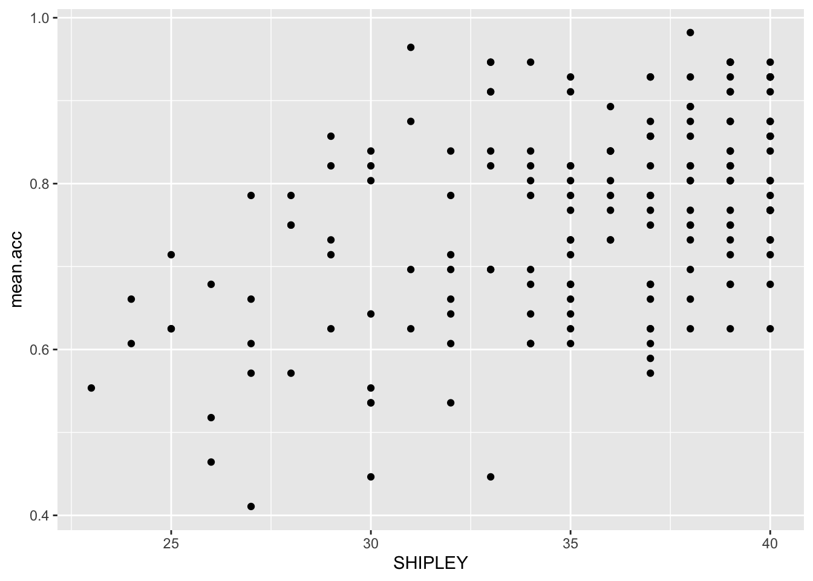
ggplot(data = study.two.gen, aes(x = HLVA, y = mean.acc)) +
geom_point()
ggplot(data = study.two.gen, aes(x = AGE, y = mean.acc)) +
geom_point()
Practical Task 7 – Edit the appearance of each plot step-by-step
- You may want to use the same plot edit choices for all plots.
- Producing plots with a consistent appearance will make it easier for your audience to read your plots.
- You can find links to relevant information on options in the
how-toguide.
- Use the information to make the plots pleasing in appearance to you.
Hints
- Do not be afraid to select, copy then paste code to re-use it and save yourself the effort of typing out the code over and over again.
- But be careful to make sure that you change variable names, and that things like axis values are sensible for each variable.
Pract.Q.8. Can you edit the appearance of the points using
alpha,size,shape, andcolour?
Code
Check out the example code for each of the scatterplots.
- Notice what changes and what stays the same.
ggplot(data = study.two.gen, aes(x = SHIPLEY, y = mean.acc)) +
geom_point(alpha = 0.5, size = 2, colour = "blue", shape = 'square')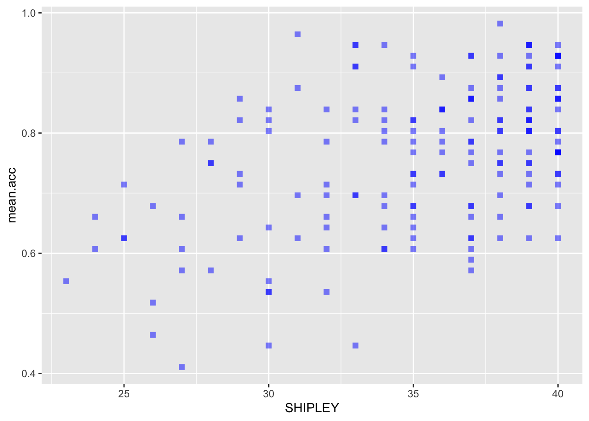
ggplot(data = study.two.gen, aes(x = HLVA, y = mean.acc)) +
geom_point(alpha = 0.5, size = 2, colour = "blue", shape = 'square')ggplot(data = study.two.gen, aes(x = AGE, y = mean.acc)) +
geom_point(alpha = 0.5, size = 2, colour = "blue", shape = 'square')Pract.Q.9. Can you edit the appearance of the background?
Code
Check out the example code for each of the scatterplots.
- Notice what changes and what stays the same.
ggplot(data = study.two.gen, aes(x = SHIPLEY, y = mean.acc)) +
geom_point(alpha = 0.5, size = 2, colour = "blue", shape = 'square') +
theme_bw()ggplot(data = study.two.gen, aes(x = HLVA, y = mean.acc)) +
geom_point(alpha = 0.5, size = 2, colour = "blue", shape = 'square') +
theme_bw()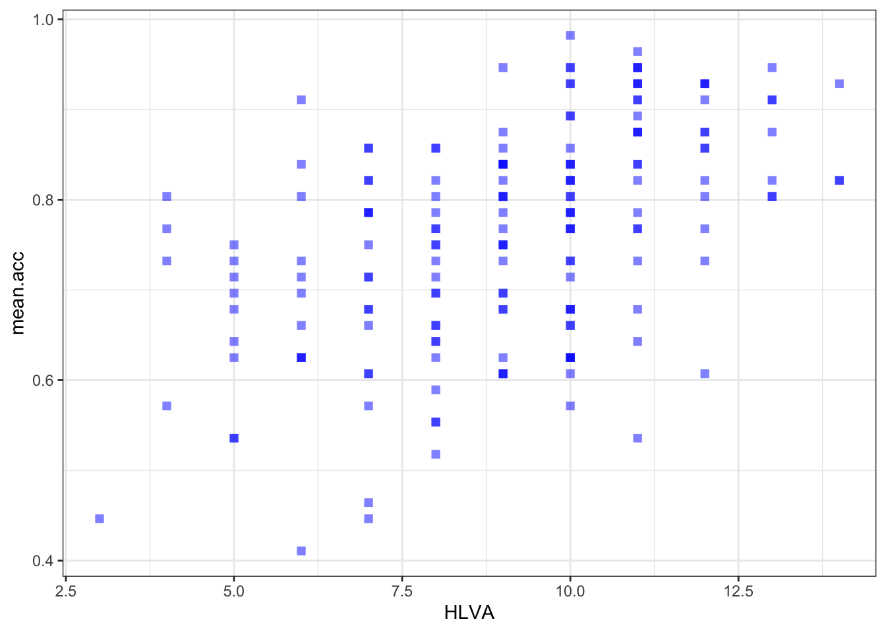
ggplot(data = study.two.gen, aes(x = AGE, y = mean.acc)) +
geom_point(alpha = 0.5, size = 2, colour = "blue", shape = 'square') +
theme_bw()Pract.Q.10. Can you edit the appearance of the labels?
Code
Check out the example code for each of the scatterplots.
- Notice what changes and what stays the same.
ggplot(data = study.two.gen, aes(x = SHIPLEY, y = mean.acc)) +
geom_point(alpha = 0.5, size = 2, colour = "blue", shape = 'square') +
theme_bw() +
labs(x = "SHIPLEY", y = "mean accuracy")
ggplot(data = study.two.gen, aes(x = HLVA, y = mean.acc)) +
geom_point(alpha = 0.5, size = 2, colour = "blue", shape = 'square') +
theme_bw() +
labs(x = "HLVA", y = "mean accuracy")ggplot(data = study.two.gen, aes(x = AGE, y = mean.acc)) +
geom_point(alpha = 0.5, size = 2, colour = "blue", shape = 'square') +
theme_bw() +
labs(x = "Age (Years)", y = "mean accuracy")Pract.Q.11. Can you set the x-axis and y-axis limits to 0 (as the minimum) versus the sample data maximum values for the variables you are plotting?
Hint
- For these plots the y-axis limits will be the same because the outcome stays the same across plots.
- The x-axis limits will be different for each different predictor variable.
- Check out the information in the
summary()of the dataset. - The minimum values for the variables will often be 0, e.g., if you are looking at data from ability tests and people who do the tests can get 0. But if you are looking at, e.g., ratings data then the minimum value could be 1, e.g., because people are asked to rate something on a scale from 1-9.
Check first if you can write the code you need to produce each scatterplot. Click on the button to see the code example: compare it to the code you wrote.
Code
Check out the example code for each of the scatterplots.
- Notice what changes and what stays the same.
ggplot(data = study.two.gen, aes(x = SHIPLEY, y = mean.acc)) +
geom_point(alpha = 0.5, size = 2, colour = "blue", shape = 'square') +
theme_bw() +
labs(x = "SHIPLEY", y = "mean accuracy") +
xlim(0, 40) + ylim(0, 1)ggplot(data = study.two.gen, aes(x = HLVA, y = mean.acc)) +
geom_point(alpha = 0.5, size = 2, colour = "blue", shape = 'square') +
theme_bw() +
labs(x = "HLVA", y = "mean accuracy") +
xlim(0, 16) + ylim(0, 1)ggplot(data = study.two.gen, aes(x = AGE, y = mean.acc)) +
geom_point(alpha = 0.5, size = 2, colour = "blue", shape = 'square') +
theme_bw() +
labs(x = "Age (Years)", y = "mean accuracy") +
xlim(0, 80) + ylim(0, 1)8.4.3.5 Practical Part 5: Using correlations to to answer research questions — making sure you are comfortable
One of our research questions is:
- What person attributes predict success in understanding?
Practical Task 8 – Examine the correlations between the outcome variable and predictor variables
Run three correlations to look at this question:
- between mean accuracy and
SHIPLEY; - between mean accuracy and
HLVA; - between mean accuracy and
AGE.
Check first if you can write the code you need to complete each correlation analysis. Click on the button to see the code example: compare it to the code you wrote.
Code
Check out the example code for doing each of the correlation analyses.
- Notice what changes and what stays the same.
cor.test(study.two.gen$SHIPLEY, study.two.gen$mean.acc, method = "pearson", alternative = "two.sided")
Pearson's product-moment correlation
data: study.two.gen$SHIPLEY and study.two.gen$mean.acc
t = 6.8493, df = 170, p-value = 1.299e-10
alternative hypothesis: true correlation is not equal to 0
95 percent confidence interval:
0.3390103 0.5746961
sample estimates:
cor
0.4650537 cor.test(study.two.gen$HLVA, study.two.gen$mean.acc, method = "pearson", alternative = "two.sided")
Pearson's product-moment correlation
data: study.two.gen$HLVA and study.two.gen$mean.acc
t = 7.5288, df = 170, p-value = 2.866e-12
alternative hypothesis: true correlation is not equal to 0
95 percent confidence interval:
0.3787626 0.6044611
sample estimates:
cor
0.5000559 cor.test(study.two.gen$AGE, study.two.gen$mean.acc, method = "pearson", alternative = "two.sided")
Pearson's product-moment correlation
data: study.two.gen$AGE and study.two.gen$mean.acc
t = 0.30121, df = 170, p-value = 0.7636
alternative hypothesis: true correlation is not equal to 0
95 percent confidence interval:
-0.1269774 0.1721354
sample estimates:
cor
0.02309589 Now use the results from the correlations to answer the following questions.
Pract.Q.12. What is
r, the coefficient for the correlation betweenmean.accandSHIPLEY?
Pract.A.12. r = 0.4650537
Pract.Q.13. Is the correlation between
mean.accandHLVAsignificant?
Pract.A.13. – r is significant, p < .05
Pract.Q.14. What are the values for t and p for the significance test for the correlation between
mean.accandAGE?
Pract.A.14. t = 0.30121, p = 0.7636
Pract.Q.15. For which pair of outcome-predictor variables is the correlation the largest?
Pract.A.15. – The correlation is the largest between
mean.accandHLVA.
Pract.Q.16. What is the sign or direction of each of the correlations?
Pract.A.16. – All the correlations are positive.
8.4.3.6 Practical Part 6: Using a linear model to to answer research questions
Now we can use linear models to try to answer the question:
- What person attributes predict success in understanding?
Practical Task 9 – Examine the relation between outcome mean accuracy (mean.acc) and each of the predictors: SHIPLEY, HLVA and AGE
You need to run three separate lm() analyses:
- with mean accuracy
mean.accas the outcome andSHIPLEYas the predictor; - with mean accuracy
mean.accas the outcome andHLVAas the predictor; - with mean accuracy
mean.accas the outcome andAGEas the predictor.
Hints
You need to use lm() to do the analyses.
- Be careful to identify the outcome and predictor variables correctly.
- Remember that analysis code is arranged like this:
lm(outcome.variable ~ predictor.variable, data = data.set)With:
lm()asking R to do the linear model analysis;outcome.variable ~ ...specified on the left of the~;- the
predictor.variable ~ ...specified on the right of the~; - and
data.setidentifying to R what dataset you are working with.
Check first if you can write the code you need to complete each linear model analysis. Click on the button to see the code example: compare it to the code you wrote.
Code
Check out the example code for each of the models.
- Notice what changes and what stays the same.
model.1 <- lm(mean.acc ~ SHIPLEY, data = study.two.gen)
summary(model.1)
Call:
lm(formula = mean.acc ~ SHIPLEY, data = study.two.gen)
Residuals:
Min 1Q Median 3Q Max
-0.285771 -0.076662 0.002099 0.079416 0.257793
Coefficients:
Estimate Std. Error t value Pr(>|t|)
(Intercept) 0.308027 0.066426 4.637 7.01e-06 ***
SHIPLEY 0.012854 0.001877 6.849 1.30e-10 ***
---
Signif. codes: 0 '***' 0.001 '**' 0.01 '*' 0.05 '.' 0.1 ' ' 1
Residual standard error: 0.107 on 170 degrees of freedom
Multiple R-squared: 0.2163, Adjusted R-squared: 0.2117
F-statistic: 46.91 on 1 and 170 DF, p-value: 1.299e-10model.2 <- lm(mean.acc ~ HLVA, data = study.two.gen)
summary(model.2)
Call:
lm(formula = mean.acc ~ HLVA, data = study.two.gen)
Residuals:
Min 1Q Median 3Q Max
-0.27457 -0.06777 0.01474 0.08025 0.23146
Coefficients:
Estimate Std. Error t value Pr(>|t|)
(Intercept) 0.522016 0.032544 16.040 < 2e-16 ***
HLVA 0.026207 0.003481 7.529 2.87e-12 ***
---
Signif. codes: 0 '***' 0.001 '**' 0.01 '*' 0.05 '.' 0.1 ' ' 1
Residual standard error: 0.1047 on 170 degrees of freedom
Multiple R-squared: 0.2501, Adjusted R-squared: 0.2456
F-statistic: 56.68 on 1 and 170 DF, p-value: 2.866e-12model.3 <- lm(mean.acc ~ AGE, data = study.two.gen)
summary(model.3)
Call:
lm(formula = mean.acc ~ AGE, data = study.two.gen)
Residuals:
Min 1Q Median 3Q Max
-0.34684 -0.08464 0.01084 0.08323 0.21968
Coefficients:
Estimate Std. Error t value Pr(>|t|)
(Intercept) 0.7519965 0.0267206 28.143 <2e-16 ***
AGE 0.0002136 0.0007092 0.301 0.764
---
Signif. codes: 0 '***' 0.001 '**' 0.01 '*' 0.05 '.' 0.1 ' ' 1
Residual standard error: 0.1208 on 170 degrees of freedom
Multiple R-squared: 0.0005334, Adjusted R-squared: -0.005346
F-statistic: 0.09073 on 1 and 170 DF, p-value: 0.7636If you look at the model summary you can answer the following questions.
Pract.Q.17. What is the estimate for the coefficient of the effect of the predictor
HLVAonmean.acc?
Pract.A.17. 0.026207
Pract.Q.18. Is the effect significant?
Pract.A.18. It is significant, p < .05
Pract.Q.19. What are the values for t and p for the significance test for the coefficient?
Pract.A.19. t = 7.529, p = 2.87e-12
Pract.Q.20. How would you describe in words the shape or direction of the association between
HLVAandmean.acc?
Pract.A.20. The slope coefficient – and a scatterplot (draw it) – suggest that as HLVA scores increase so also do mean accuracy scores.
Pract.Q.21. How how would you describe the relations apparent between the predictor and outcome in all three models?
Pract.A.21. It is possible to see, given coefficient estimates, that the association between predictor and outcome is positive for each model: mean accuracy appears to increase for increasing values of SHIPLEY vocabulary, HLVA health literacy, and age.
8.4.3.7 Practical Part 7: Using a linear model to make predictions
Practical Task 10 – Fit a linear model and use the results to plot the model predictions
We are going to draw a scatterplot and add a line.
- The line will show the model predictions, given the model intercept and effect coefficient estimates.
Step 1. First fit a linear model and get a summary of the estimates
Fit a model with mean accuracy mean.acc as the outcome and HLVA as the predictor.
Check if you can write the code you need to complete the linear model analysis. Click on the button to see the code example: compare it to the code you wrote.
Code
model <- lm(mean.acc ~ HLVA, data = study.two.gen)
summary(model)
Call:
lm(formula = mean.acc ~ HLVA, data = study.two.gen)
Residuals:
Min 1Q Median 3Q Max
-0.27457 -0.06777 0.01474 0.08025 0.23146
Coefficients:
Estimate Std. Error t value Pr(>|t|)
(Intercept) 0.522016 0.032544 16.040 < 2e-16 ***
HLVA 0.026207 0.003481 7.529 2.87e-12 ***
---
Signif. codes: 0 '***' 0.001 '**' 0.01 '*' 0.05 '.' 0.1 ' ' 1
Residual standard error: 0.1047 on 170 degrees of freedom
Multiple R-squared: 0.2501, Adjusted R-squared: 0.2456
F-statistic: 56.68 on 1 and 170 DF, p-value: 2.866e-12You will need to record some information from the model summary so you can use it next.
Pract.Q.22. What is the coefficient estimate for the intercept?
Pract.A.22. 0.522016
Pract.Q.23. What is the coefficient estimate for the slope of
HLVA?
Pract.A.23. 0.026207
Step 2. Second, draw a scatterplot and add a line to show the model predictions
Check first if you can write the code you need to produce the prediction plot. Click on the button to see the code example: compare it to the code you wrote.
Code
ggplot(data = study.two.gen, aes(x = HLVA, y = mean.acc)) +
geom_point(alpha = 0.5, size = 2, colour = "blue", shape = 'square') +
geom_abline(intercept = 0.522016, slope = 0.026207,
colour = "red", size = 1.5) +
theme_bw() +
labs(x = "HLVA", y = "mean accuracy") +
xlim(0, 15) + ylim(0, 1)You have now completed the Week 8 practical exercises and questions
Important
Predicting human behaviour is at the heart of:
- Psychological science, and our collective attempt to understand ourselves.
- Behavioural analytics, and the ways businesses work with what we know about people.
This is an important step in your developmental journey: Well done!
- We will continue to deepen and extend your skills and understanding but everything builds on the key lessons we have been learning here.
The answers
After the practical class, we will reveal the answers that are currently hidden.
The answers version of the webpage will present my answers for questions, and some extra information where that is helpful.
Look ahead: growing in independence
Important
Every professional using R spends a lot of time on one or two R information websites. The most useful include:
- the
{tidyverse}webpages; StackOverflow;- the
R bloggersaggregator webpages.
Can you find them?
Is there a question that has been puzzling you about what you are doing? Can you find the answer on one of these websites?